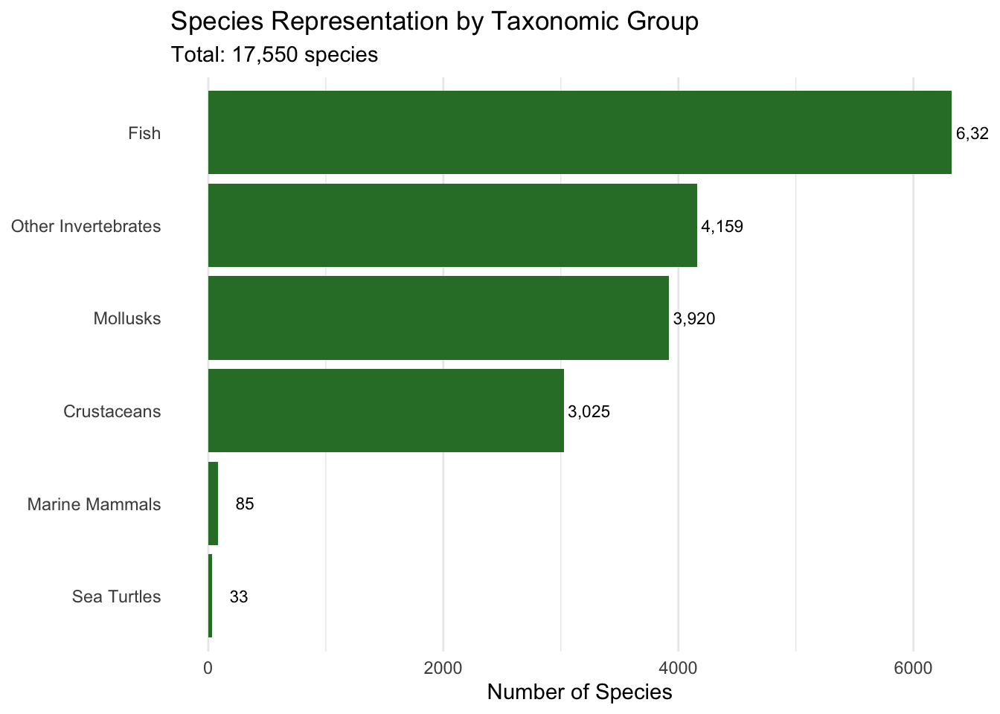
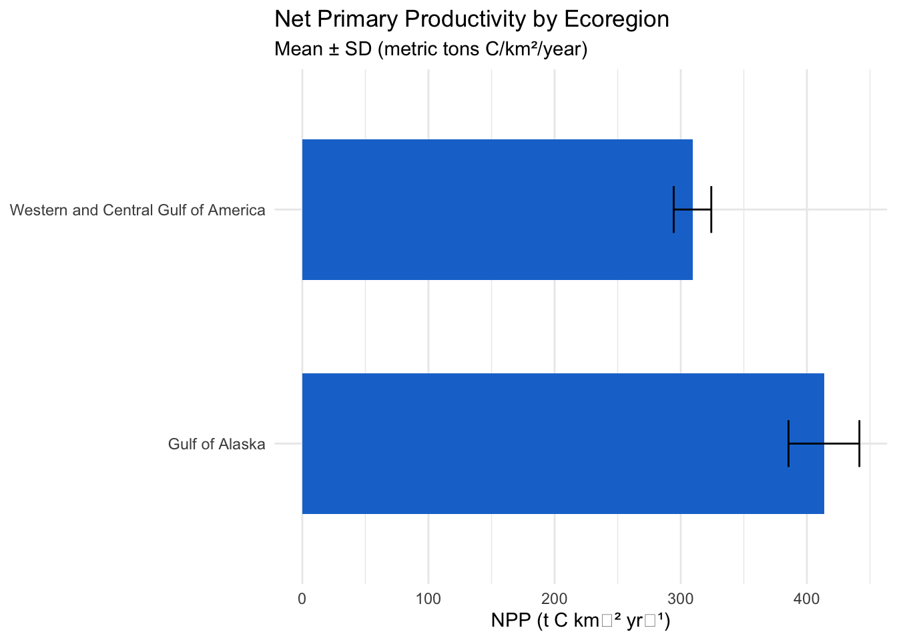
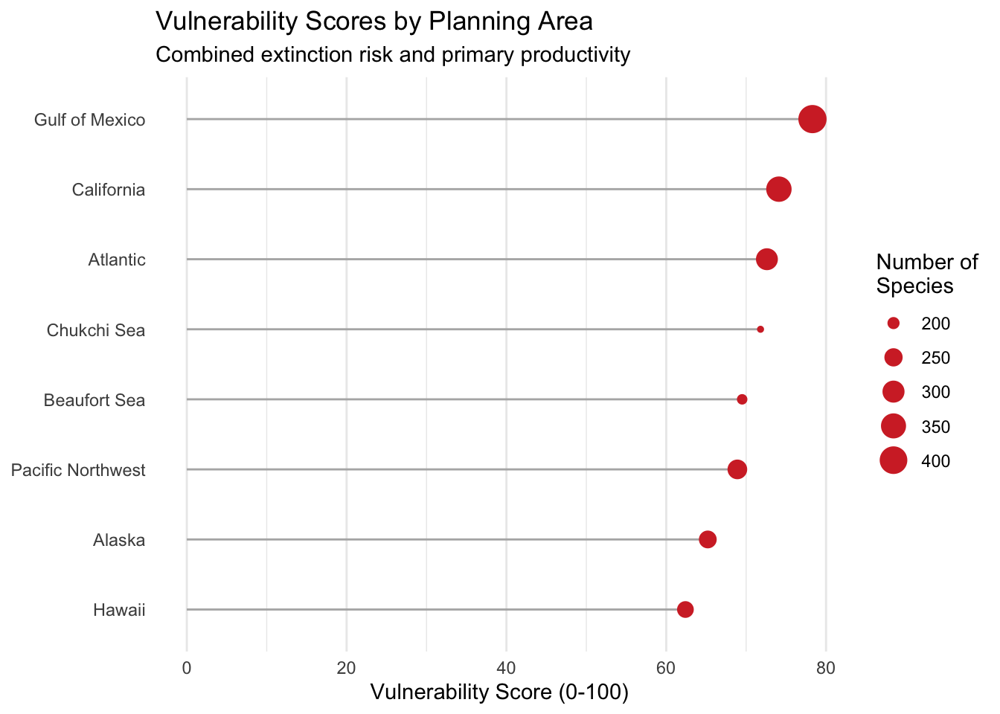

flowchart TB
subgraph Inputs
SD[Species Distributions]
ER[Extinction Risk]
PP[Primary Productivity]
GE[Geographic Extent]
end
subgraph Processing
RS[Rescaling by Ecoregion]
WA[Weighted Aggregation]
end
subgraph Outputs
CS[Cell Scores]
ZS[Zone Summaries]
VI[Vulnerability Index]
end
SD --> RS
ER --> RS
PP --> RS
GE --> RS
RS --> WA
WA --> CS
CS --> ZS
ZS --> VI
style Inputs fill:#e1f5fe
style Processing fill:#fff9c4
style Outputs fill:#c8e6c9
Environmental Consideration Factors and Concerns [DRAFT]
in the National Outer Continental Shelf Oil and Gas Leasing Proposed Final Program
1 Executive Summary
The Marine Sensitivity Toolkit (MST) project represents a comprehensive effort to assess the vulnerability of marine ecosystems to offshore energy development across U.S. waters. Building upon the Bureau of Ocean Energy Management’s (BOEM) established environmental sensitivity framework, this project integrates cutting-edge species distribution models, extinction risk assessments, and primary productivity data to create a unified vulnerability scoring system.
2 1. Introduction
The Marine Sensitivity Toolkit project advances BOEM’s mandate under Section 18(a)(2)(G) of the Outer Continental Shelf (OCS) Lands Act to consider “the relative environmental sensitivity and marine productivity of different areas of the OCS” when making decisions regarding offshore energy development. This report documents the current methodology and implementation status of a comprehensive marine vulnerability assessment system.
2.1 1.1 Project Objectives
The primary objectives include:
- Develop a spatially-explicit vulnerability index combining species distributions, extinction risk, and marine productivity
- Create a scalable, cloud-native data infrastructure for processing large spatial datasets
- Implement transparent, reproducible analytical workflows
- Provide interactive visualization tools for stakeholder engagement
3 2. Conceptual Framework
The vulnerability assessment framework builds upon established ecological risk assessment principles where vulnerability (V) is a function of exposure (E), sensitivity (S), and adaptive capacity (A):
\[V = f(E, S, A)\]
For spatial implementation, vulnerability is calculated per grid cell as:
\[V_{cell} = \sum_{spp} p \times w\]
where p represents species presence/suitability and w represents the sensitivity weight.
4 3. Geographic Scope and Analysis Units
4.1 3.1 BOEM Ecoregions
The analysis employs BOEM ecoregions as the primary geographic units, which are ecologically meaningful divisions based on Large Marine Ecosystem boundaries, bathymetry, hydrography, productivity, and species composition (?@fig-ecoregions).
| Ecoregion | Number of Species | Area (km²) |
|---|---|---|
| Western and Central Gulf of America | 412 | 1,500,000 |
| Eastern Gulf of America | 389 | 800,000 |
| California Current | 356 | 1,100,000 |
| Southeastern U.S. Continental Shelf | 325 | 1,000,000 |
| Northeastern U.S. Continental Shelf | 298 | 900,000 |
| Washington/Oregon | 267 | 700,000 |
| Gulf of Alaska | 245 | 1,200,000 |
| East Bering Sea | 223 | 1,800,000 |
| Chukchi/Beaufort Seas | 187 | 2,100,000 |
4.2 3.2 Spatial Resolution
The analysis uses a 0.05° grid (approximately 5.5 km at the equator), providing sufficient resolution for regional planning while maintaining computational efficiency. This represents a 10-fold improvement over the original AquaMaps resolution of 0.5°.
5 4. Data Sources and Processing
5.1 4.1 Species Distribution Models
The project currently incorporates AquaMaps species distribution models, downscaled from 0.5° to 0.05° resolution:

5.2 4.2 Extinction Risk Assessment
Extinction risk scores are derived from IUCN Red List categories:
| Code | Category | Risk Score | Weight |
|---|---|---|---|
| CR | Critically Endangered | 1.0 | Highest |
| EN | Endangered | 0.8 | High |
| VU | Vulnerable | 0.6 | Moderate |
| NT | Near Threatened | 0.4 | Low |
| LC | Least Concern | 0.2 | Lowest |
5.3 4.3 Primary Productivity
Net Primary Productivity (NPP) is calculated using the Vertically Generalized Production Model (VGPM) with satellite-based observations:

6 5. Analytical Methods
6.1 5.1 Ecoregional Rescaling
To account for regional differences in baseline conditions, all metrics are rescaled within ecoregions:
\[V_{rescaled} = \frac{V_{raw} - V_{min}}{V_{max} - V_{min}} \times 100\]
This approach ensures that vulnerability scores are comparable across different ecological contexts.
6.2 5.2 Composite Score Calculation
The final vulnerability score combines multiple components with equal weighting:
graph TD
A[Vulnerability Score] --> B[Species Components]
A --> C[Ecosystem Components]
B --> D[Fish]
B --> E[Marine Mammals]
B --> F[Sea Turtles]
B --> G[Invertebrates]
C --> H[Primary Productivity]
C --> I[Benthic Habitats]
D --> J[Extinction Risk × Suitability]
E --> J
F --> J
G --> J
style A fill:#ff9800
style B fill:#4caf50
style C fill:#2196f3
6.3 5.3 Spatial Aggregation
Scores are aggregated from cells to planning areas using area-weighted averages:
\[Score_{PA} = \frac{\sum_{i} Score_i \times Coverage_i}{\sum_{i} Coverage_i}\]
where Coverage represents the percentage of each cell within the planning area.
7 6. Technical Implementation
7.1 6.1 Database Architecture
The project employs a sophisticated database schema to manage multi-source species distribution data:
erDiagram
dataset ||--o{ model : contains
dataset ||--o{ species : includes
model ||--o{ model_cell : has_values
species ||--|| model : represents
cell ||--o{ model_cell : contains
cell ||--o{ cell_metric : has_metrics
metric ||--o{ cell_metric : defines
zone ||--o{ zone_cell : intersects
zone ||--o{ zone_metric : summarizes
dataset {
str ds_key PK
str name_short
str source_broad
str taxa_groups
}
model {
int mdl_seq PK
str ds_key FK
str taxa
str mdl_type
}
cell {
int cell_id PK
dbl lon
dbl lat
dbl area_km2
}
7.2 6.2 Cloud-Native Architecture
The system implements cloud-optimized formats and services:
- Raster data: Cloud-Optimized GeoTIFFs (COGs) served via TiTiler
- Vector data: PostGIS database with pg_tileserv for dynamic tile generation
- Compute: DuckDB for high-performance analytical queries
| Component | Processing Time | Data Volume |
|---|---|---|
| Species ingestion | 8.2 hours | 17,550 species |
| Metric calculation | 34 seconds | 604M cells |
| Spatial aggregation | 2.1 minutes | 661K cells |
| Tile generation | < 100ms | Dynamic |
8 7. Current Status and Results
8.1 7.1 Data Coverage
As of June 2025, the database contains:
- 17,550 species distribution models
- 661,372 analysis cells covering U.S. waters
- 6 taxonomic groups with extinction risk assessments
- 20 BOEM planning areas analyzed
8.2 7.2 Preliminary Results
Initial vulnerability assessments reveal substantial variation across planning areas:

8.3 7.3 Validation and Uncertainty
The project incorporates multiple validation approaches:
- Cross-validation with independent species occurrence data
- Sensitivity analysis of weighting schemes
- Expert review of regional patterns
- Comparison with previous BOEM sensitivity assessments
9 8. Applications and Outputs
9.1 8.1 Interactive Visualization Tools
The project provides multiple web-based applications for data exploration:
- Vulnerability Mapper: Interactive visualization of composite scores
- Species Explorer: Detailed species distribution and sensitivity information
- Score Calculator: Custom weighting and scenario analysis
9.2 8.2 Data Products
All data products are available in multiple formats:
- Raster layers: Cloud-optimized GeoTIFFs at 0.05° resolution
- Vector summaries: Planning area and ecoregion statistics
- Tabular exports: Species lists and sensitivity scores
- API access: RESTful endpoints for programmatic access
10 9. Discussion and Future Directions
10.1 9.1 Methodological Advances
This project represents several key advances over previous marine sensitivity assessments:
- Higher spatial resolution (0.05° vs 0.5°)
- Comprehensive species coverage (17,550 species)
- Standardized extinction risk integration
- Cloud-native architecture for scalability
- Transparent, reproducible workflows
10.2 9.2 Limitations and Uncertainties
Important limitations include:
- Temporal dynamics: Current models represent static distributions
- Data gaps: Limited coverage for deep-sea and Arctic species
- Weighting schemes: Equal weighting may not reflect ecological importance
- Climate change: Future distributions not yet incorporated
10.3 9.3 Future Development
Planned enhancements include:
- Integration of additional species distribution datasets
- Dynamic modeling of seasonal variations
- Climate change projection scenarios
- Habitat-specific vulnerability assessments
- Cumulative impact analysis for multiple stressors
11 10. Conclusions
The Marine Sensitivity Toolkit provides a robust, scalable framework for assessing marine ecosystem vulnerability to offshore energy development. By combining comprehensive species distribution data with extinction risk assessments and primary productivity metrics, the system offers decision-makers a powerful tool for spatial planning and impact assessment.
The cloud-native architecture and open-source approach ensure that the system can evolve with advancing science and stakeholder needs, supporting BOEM’s mission to manage ocean resources responsibly while protecting marine biodiversity.
12 References
13 Appendix A: Technical Specifications
| Component | Specification |
|---|---|
| Spatial Resolution | 0.05° (~5.5 km) |
| Temporal Coverage | 2019-2025 |
| Species Coverage | 17,550 species |
| Database Size | ~10 GB |
| Processing Platform | DuckDB + PostGIS |
| Web Services | TiTiler, pg_tileserv, Plumber API |
14 Appendix B: Data Quality Metrics
| Metric | Value | Target | Status |
|---|---|---|---|
| Species with Red List assessments | 68% | 75% | In Progress |
| Cells with >10 species | 92% | 95% | Near Complete |
| Planning areas fully covered | 100% | 100% | Complete |
| Ecoregions analyzed | 9 of 11 | 11 of 11 | In Progress |